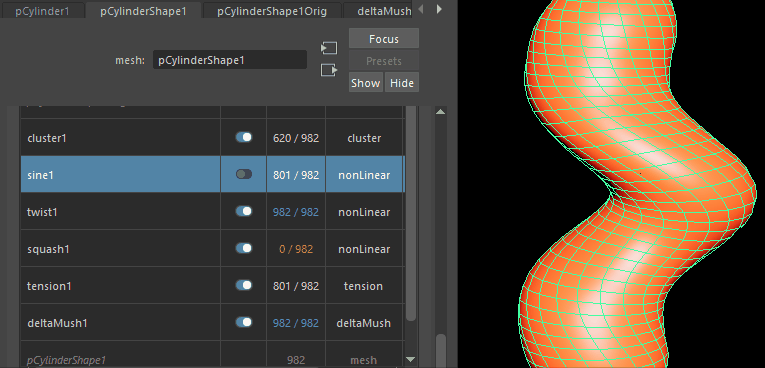

只要将变形器添加到几何体中，“变形”(Deformation)构件就会显示在“属性编辑器”(Attribute Editor)形状选项卡中，使您可以查看和管理指定给该形状的变形器。
打开“属性编辑器”(Attribute Editor)：“变形”(Deformation)构件
- 在已指定变形器的形状的属性编辑器(Attribute Editor)中单击“<形状>”选项卡，然后展开“变形”(Deformation)构件。
注： “属性编辑器”(Attribute Editor)的“变形”(Deformation)构件与“属性编辑器”(Attribute Editor)的“变形器属性”(Deformer Attributes)构件不同，后者出现在每个“<变形器>”选项卡中，可用于添加和移除几何体或为特定变形器创建衰减。

“属性编辑器”(Attribute Editor)：“变形”(Deformation)构件
“属性编辑器”(Attribute Editor)：“变形”(Deformation)构件可用于管理应用于几何体的变形器，从而可以激活或禁用、删除、重新排列和绘制变形器权重。
变形表
“变形”(Deformation)构件由一个表组成，在该表中可以看到附加到对象的每个变形器和拓扑修改器。
 （过滤器） （过滤器）
|
用于选择“变形”(Deformation)构件表中显示的内容。 |
  （上移/下移变形器） （上移/下移变形器）
|
用于在变形链中重新定位变形器。 |
| 名称(Name) | 相应变形器的名称。 |
| 状态(State) | 用于激活或禁用相应的变形器。 |
| 计数(Count) | 显示受变形影响的顶点数/形状中的顶点总数。
例如，如果将变形器应用于整个立方体，则会显示 8/8，指明变形影响全部八个顶点。但是，如果仅将变形器应用于立方体的两个顶点，则会显示 2/8。 “计数”(Count)列中的数字以不同的颜色显示：
|
| 类型(Type) | 显示对象的类型，例如非线性变形器或网格。 |
| 权重(Weight) | 显示应用于变形器的权重类型（如果有）。 |
“变形”(Deformation)构件上下文菜单
在“变形”(Deformation)构件表中的任意位置单击鼠标右键以访问上下文菜单，通过该菜单可以快速对列表中选定的变形器执行操作。
- 选择节点(Select Node)
- 将“属性编辑器”(Attribute Editor)切换到选定节点（例如，变形器或形状节点）的选项卡，除非“变形”(Deformation)构件已固定。
- 选择组件(Select Components)
-
在变形器上单击鼠标右键，然后选择“选择组件”(Select Components)以查看受影响的组件
- 显示受选定变形器影响的组件。
- 选择衰减(Select Falloff)
- 打开选定变形器的“衰减”(Falloff)选项卡（如果有）。如果变形器上不存在衰减，则禁用此选项。
- 启用/禁用变形器(Enable/Disable Deformer)
-
在变形器上单击鼠标右键，然后选择“启用/禁用变形器”(Enable/Disable Deformer)以激活或禁用受影响的组件
- 启用或禁用选定变形器的变形效果。可以使用“状态”(State)列中的开关来执行此操作
- 权重可视化(Weights Visualization)
-

在变形器上单击鼠标右键，然后选择“权重可视化”(Weights Visualization)以查看形状的变形器权重
- 用于显示形状上的变形器权重（如果有）。变形器名称旁边将显示一个 图标，表示已显示权重。
- 绘制的权重(Painted Weights)
- 打开一个菜单，从中可以对选定变形激活权重绘制。如果适用，还可以删除任何权重绘制。请参见绘制蒙皮权重和绘制蒙皮权重工具。
- 若要退出绘制变形器模式，请选择其他工具，或按 Q 键激活选择工具
 。
。
- 对变形器重新排序(Reorder Deformers)
- 打开一个菜单，从中可以重新排列变形表和变形器链中的变形器。更改变形器顺序会影响对象的变形。
也可以使用表顶部的“上移/下移变形器”(Move deformer up/down)
上移(Move up) 在表/变形链中将选定变形器上移一行。 移到顶部(Move to Top) 在变形链中将选定变形器移到最前面/将其移到表的顶部。 下移(Move Down) 在表/变形链中将选定变形器下移一行。 移到底部(Move to Bottom) 在变形链中将选定变形器移到最后面/将其移到表的底部。 按钮。
- 移除调整(Remove Tweaks)
- 在将变形器应用于形状后，禁用对该变形器所做的任何调整。有关调整的信息，请参见点调整对象（调整节点）。